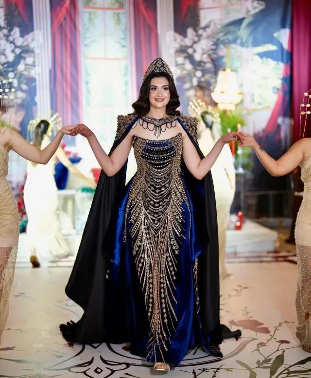
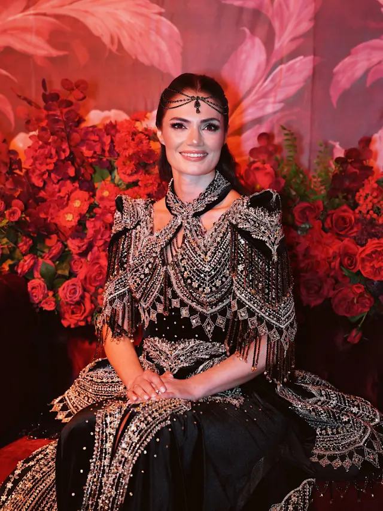
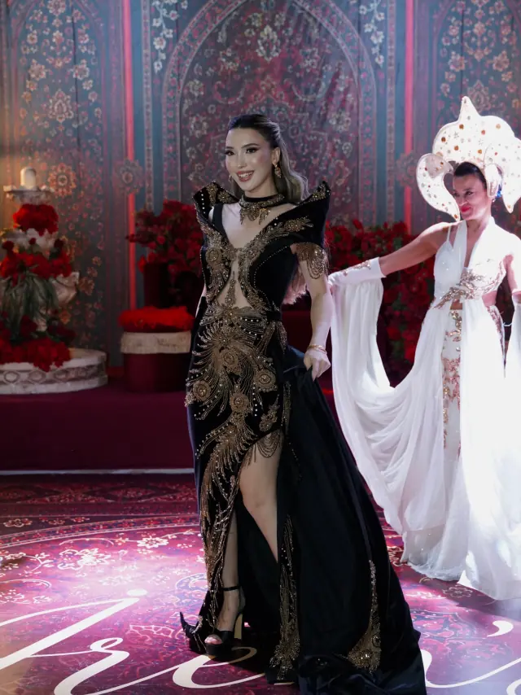
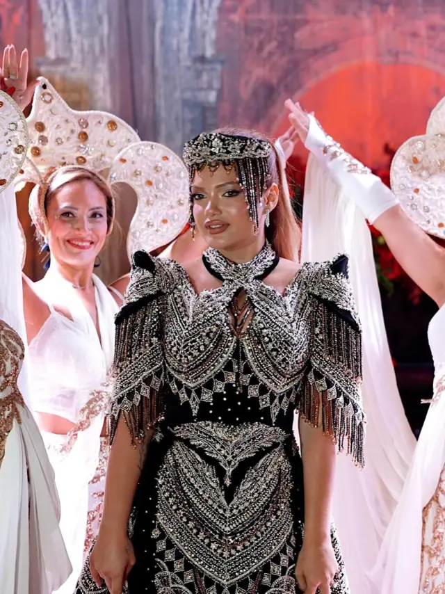

Föy 02 · KınaKiralık
Lacivert kadife kaftan

Teknik föyK-02
- Kumaş
- Lacivert kadife
- İşleme
- Altın tonlu boncuk ve taş, gövdeden eteğe
- Tamamlayıcı
- Siyah saten pelerin, işlemeli taç
- Gece
- Kına
- Seçenek
- Kiralık

Numune
gövde işi
Beden ve tarih uygunluğu mesajla sorulur.
Kınanın zarafeti, Büşra gelinimizin güzelliğiyle bambaşka.
Boncuk dizileri omuzlardan başlayıp gövdede sıklaşıyor, eteğe doğru ince ışık çizgileri gibi uzuyor. Kadife ışığı yutuyor, altın işleme geri veriyor.
Büşra'nın o gece tercih ettiği kaftanı, gelin adaylarımızın hayallerine eşlik etmesi için özenle kiralıyoruz.

Aynı raftan
Diğer kaftan föyleri

Gümüş saçakK-01 · siyah kadife

Altın sırmaK-03 · siyah kadife

Gümüş başlıklıK-04 · kına sahnesi

Bordo ışıltıK-05 · kına elbisesi